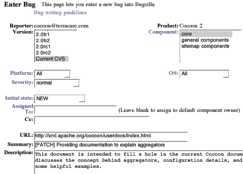

How to Contribute a Patch via Bugzilla |  |
Bugzilla is the Internet-based mechanism to facilitate contributions to any Apache project. This includes changes to code and documents (Patches), and also reports of flaws in the system (Bugs), and suggestions for enhancement. In this How-to we will concentrate on the Patch tracking capabilities of Bugzilla. We will explain how to create your Bugzilla account, how to enter a patch description, and finally how to attach the actual patch file.
- Overview
- Intended Audience
- Prerequisites
- Steps
- Real World Extension
- Tips
- References
- Revisions
Overview
Bugzilla is the Internet-based mechanism to facilitate contributions to any Apache project. This includes changes to code and documents (Patches), and also reports of flaws in the system (Bugs), and suggestions for enhancement. In this How-to we will concentrate on the Patch tracking capabilities of Bugzilla. We will explain how to create your Bugzilla account, how to enter a patch description, and finally how to attach the actual patch file.
Intended Audience
This document is meant for first-time users of Bugzilla. The web interface can be daunting, so this concise explanation will help you to start. After your first patch submission, you can proceed to make more substantial contributions.
As our example we use the contribution of a simple documentation patch for the Apache Cocoon project. The principles apply to any project.
Prerequisites
Bugzilla contributors should:
- Understand what a Patch is and how to make one. Note that a new complete document is still just a "patch", though it does need separate treatment to a normal "diff".
- Understand that Bugzilla is the Apache Bug Database. Bugzilla does not distinguish between a Bug report, a Patch submission, and an Enhancement suggestion. They are all "Bugs" as far as Bugzilla is concerned.
Steps
Here is how to proceed. Go to Bugzilla in another browser window.
1. Create your Bugzilla Account
Follow the link the home page to "Open a new Bugzilla account". Do not worry, you will not be sent spam email nor bombarded with advertisements by setting up this account. It is purely a workgroup tool.
Note that you can conduct queries in Bugzilla and review submissions without having an account. However, to make a contribution you must have an account. This ensures legitimacy. It also enables the system to send you email automatically when your patch is applied by a Cocoon committer.
2. Enter a new bug report
Follow the "Enter a new bug report" link from the Bugzilla home page. First, you will be asked to select the relevant project ... choose Cocoon 2 of course. Next, you will be asked to provide your account details. Following that, you will be presented an input form for the various details ...

Specify Version
This is the version of Cocoon that you prepared your patch against. Choose Current CVS if you have an up-to-date local working copy of HEAD branch or a very recent nightly build. Otherwise choose the relevant release version. This is a very important step, as you will confuse the committer if your changes do not match the repository. If you are unsure, then please say so in the description at step 12.
Specify Component
Follow the "Component" link for description of the available components. If you do not know which component is relevant, then just use core.
Specify Platform
This is really meant for bug reporting. Perhaps it could be relevant for a patch. You would usually specify the All option.
Specify Operating System (OS)
Really meant for bug reporting. Perhaps it could be relevant for a patch. You would usually specify the All option.
Specify Severity
The impact that would arise if your patch is not applied. For a documentation patch, the severity would usually be the default Normal. However, if it addressed some serious lack or fixed a misguided configuration statement, then the impact could be major.
(The enhancement option would not be used for a patch, as it is intended for suggesting something that should be done. Use this option wisely. It would be better to discuss it on the mailing list first.)
Specify Initial State
Use the New option.
Specify Assigned To
Leave it blank. Your patch will be automatically assigned to the cocoon-dev mailing list. When a committer takes on your patch, that committer will assign the bug to their own email address. This pevents duplication of effort by other committers.
The Cc field can be used if you need the bug reports, and any follow-up, to be copied to some other person. Remember that your report will be sent automatically to the cocoon-dev mailing list, so you do not need to Cc anyone there.
Specify URL
If the patch refers to a particular document, then provide the website URL. If it refers to an issue with one of the local Cocoon Samples, then provide the localhost URL.
Carefully choose the Summary
The summary will become the all-important title of the bug. Use it wisely. You want to draw attention to your patch. Just as with posting email to the listervers, choosing a poor title may cause your posting to be easily overlooked. Use up all the characters available ... about 60 maximum.
Start the Summary with the [PATCH] tag. This will ensure that it is included in the Cocoon automated patch queue summary posted to the mailing lists. The patch queue summary reminds people what patches are pending. If you omit this tag, then your patch may easily be overlooked.
Description
Provide a brief explanation of what your patch does. Supply any instructions to help the committer apply your patch efficiently. Note any issues that may remain. It may help to list each file that you are submitting and briefly describe what it is. A committer will need to provide a descriptive log message when committing your work. Providing a clear description here will help them.
Consider writing the Description and Summary text before you start entering your patch report. You could save it in a local text file beforehand and then copy-and-paste it when the time comes.
If this were a bug report, then it would need extensive description.
3. Send the patch report
Review your options, then press the Commit button. This will add an entry to the bug database and email a report to the cocoon-dev mailing list and a copy to you. Your submission will be assigned a unique Bug Number which you can use to review its progress.
The next steps will show you how to attach your patch to the report that you have just created ...
4. Create an attachment of the actual patch
You will be presented with a status screen saying that your bug report was accepted and that email was sent to cocoon-dev mailing list.
Now you have a choice ... proceed to review your bug report by selecting the link "Back to Bug #XXXXX". If you forgot to mention something, then you can add more comments. From that screen, follow the link "Create a new attachment". Otherwise follow the link from this status screen to "Attach a file to this bug".
Specify the file to be uploaded
Provide the local pathname to your patchfile, e.g. /home/me/work/cocoon/patch/howto-bugzilla.tar.gz
Describe the attachment
Provide a concise one line description, e.g. Gzipped TAR archive with new docs and diffs
Specify the contentType of the attachment
If it is a Gzipped TAR archive (*.tar.gz) or a .zip archive, then select "Binary file (application/octet-stream)". If it is just a single xml document, then select "Plain text (text/plain)". If the patch is just a single diff file, then select "Patch file (text/plain, diffs)".
5. Submit the attachment
When you are ready, press the Submit button. As for Step 3, you will be presented with a status screen saying that your attachment was accepted and that email was sent to cocoon-dev mailing list.
6. Be patient
Now your patch will wait inside Bugzilla until one of the Cocoon committers assigns the patch to their own email address and starts to process it to apply it to the master CVS repository. As the registered owner of the Bug, you will be sent an automatic email at each of these stages.
7. Add more description or attachments if necessary
Until the patch is applied by the committer and the Bug report is closed, you can still add more to your bug report. However, only do this when absolutely necessary because the patch should not be changing while the committer is trying to commit it. If you just want to make further changes, then it would be better to wait until your patch is applied. Then you can make a new patch. Remember that the committer has full veto and may decide to make some slight modifications to your patch. So it is far better to wait.
8. Adding subsequent patches to the same document or program
If you want to make more patches to the same file, then please open a new Bug rather than re-open the old one. After all, once the original patch is applied by the committer, its corresponding Bug report is closed.
Real World Extension
Contributing patches, in the form of documentation or code, is a vital way to give back to the Cocoon community. For example, you might consider contributing a timely patch in the form of a new FAQ, how-to, or tutorial. Or, you may also consider submitting a patch which updates Cocoon's existing user and developer guides.
Tips
Setting user preferences
You can configure certain preferences, though the Bugzilla defaults work just fine.
Review the bugzilla documentation
There are various explanations of terminology and procedures ... follow the links should you need to know more.
Search Bugzilla
Bugzilla has a very powerful search interface. Now that you have a login account, Bugzilla can remember customized queries which you can run with a single click.
References
- Bugzilla is at http://nagoya.apache.org/bugzilla/
- Helpful Bug Writing Guidelines are available directly from the Bug entry interface.
Revisions
Find a problem with this document? Consider contacting the mailing lists or submitting your own revision. For instructions, read the How To Submit a Revision.
{kind=link}
{kind=link}
{kind=link}
{kind=link}
{kind=link}